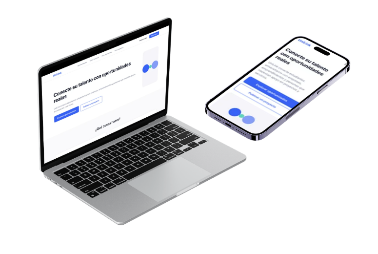

Soy estudiante
Encuentre proyectos donde pueda aplicar sus conocimientos y adquirir experiencia práctica.

UniLink conecta estudiantes universitarios con empresas, emprendimientos y personas que necesitan apoyo en proyectos y servicios.
Encuentre la forma de participar en UniLink según sus objetivos.
Encuentre proyectos donde pueda aplicar sus conocimientos y adquirir experiencia práctica.
Publique su proyecto o necesidad y encuentre estudiantes que puedan ayudarle.
Una forma sencilla de conectar conocimientos con oportunidades reales.
Muestre sus conocimientos, habilidades y áreas de interés.
Encuentre proyectos relacionados con sus conocimientos.
Participe en proyectos reales y fortalezca su experiencia.
Descubra algunos de los proyectos disponibles en UniLink.
Encuentre proyectos donde pueda poner en práctica sus conocimientos, desarrollar nuevas habilidades y construir experiencia antes de graduarse.
Publique una necesidad, proyecto o servicio y conecte con estudiantes que cuentan con conocimientos relacionados.